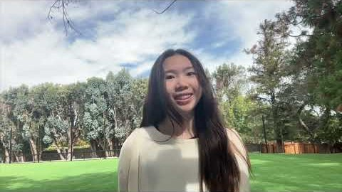

Press
Talks, interviews and articles.
Articles & podcasts
 Starting a Climate Movement Before CollegeGlobe Anew · Podcast↗
Starting a Climate Movement Before CollegeGlobe Anew · Podcast↗ 2026 Youth Sustainability Award WinnerSustainable San Mateo County↗
2026 Youth Sustainability Award WinnerSustainable San Mateo County↗ Class Notes: Chiara Luey named award winnerSan Mateo Daily Journal↗
Class Notes: Chiara Luey named award winnerSan Mateo Daily Journal↗ Interview Series: Chiara LueyAwesome Math Girls↗
Interview Series: Chiara LueyAwesome Math Girls↗ From Classrooms to County: the Peninsula’s first electrification outreach teamSilicon Valley Youth Climate Action↗
From Classrooms to County: the Peninsula’s first electrification outreach teamSilicon Valley Youth Climate Action↗ How Energizing Youth startedenergizingyouth.org↗
How Energizing Youth startedenergizingyouth.org↗
STEM projects & research videosYouTube↗
“There’s something that happens when a peer stands up and talks about clean energy.”On youth-led electrification